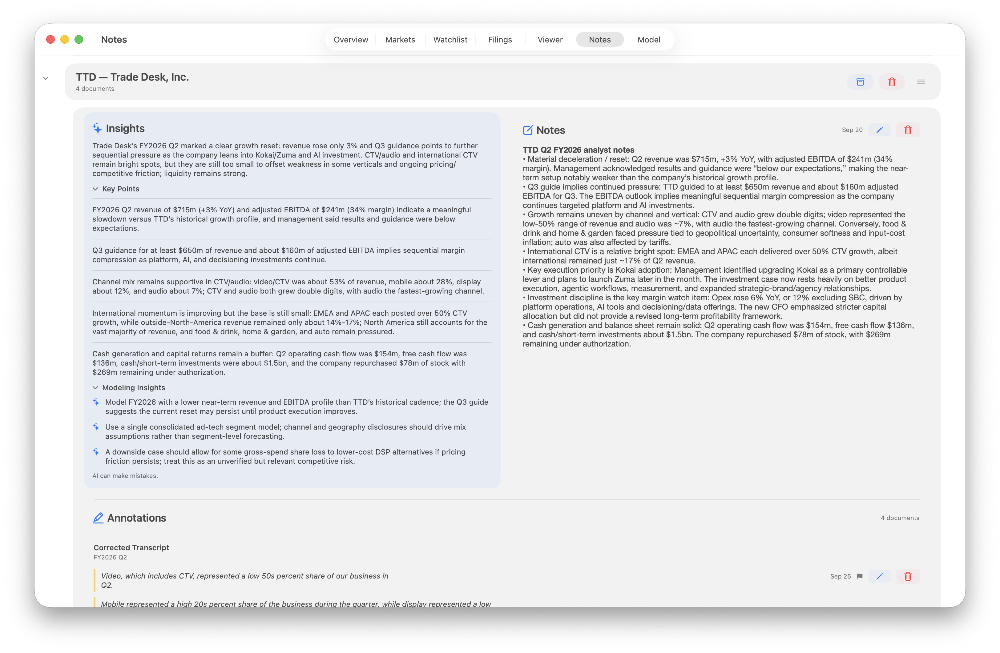
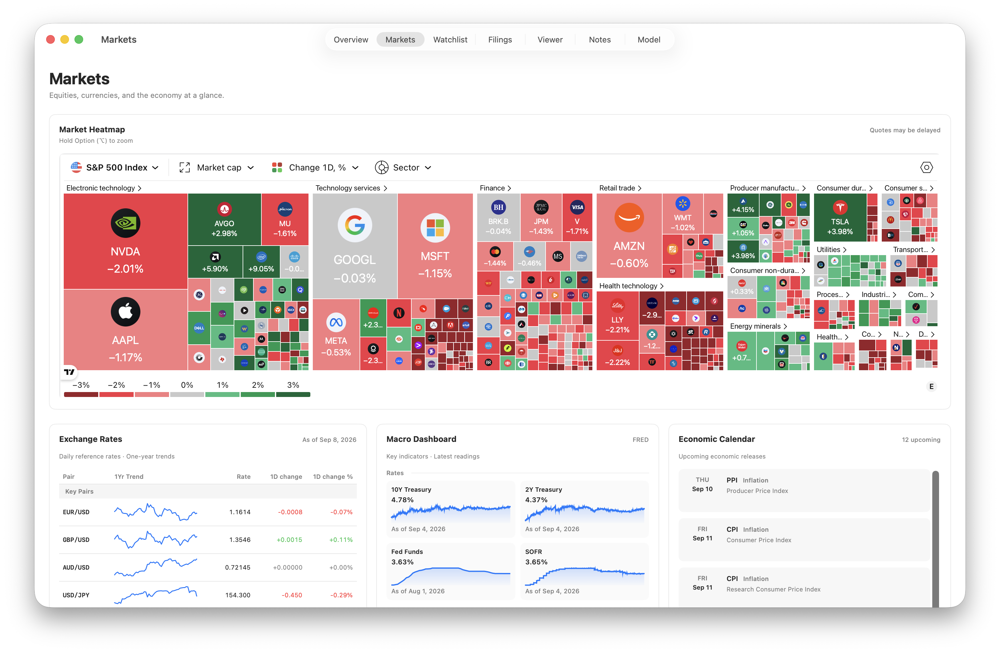
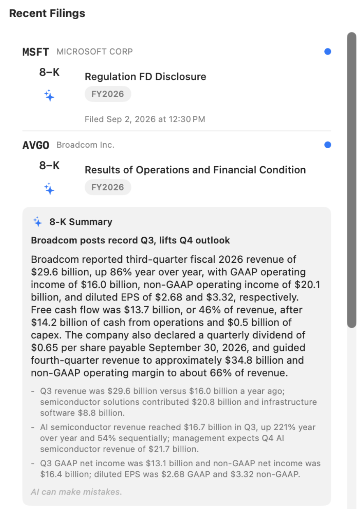

Keep your thoughts organized with company notes and annotations in one place. Revisit linked sources instantly and turn saved research into AI-generated insights.

Markets
Markets at a glance
Keep an eye on the markets with heatmaps. Track exchange rates, indicators, and upcoming releases in one place.

Filing Tracker
Don’t lose track.
Follow new SEC filings from the companies on your watchlists. Get notified of new SEC filings. View AI summaries or open in document viewer for analysis

Model Builder
Export company financials to Excel
3-statement models with annual and quarterly historical figures. Add valuation templates and export directly to Excel.